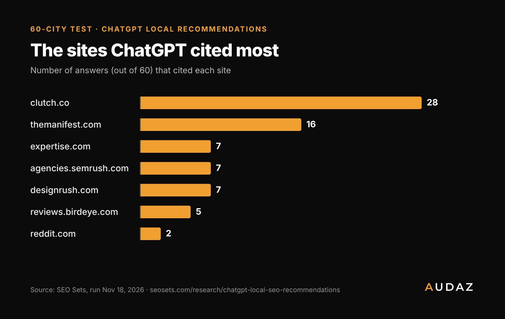

Last week I claimed AUDAZ's profile in ChatGPT. Claiming a profile tells ChatGPT who you are. It doesn't make ChatGPT pick you.
So this week I looked at what ChatGPT actually reads before it recommends a local business. A new 60-city test says it's usually not your website.
What a 60-city test found
On Nov 18, a company called SEO Sets asked ChatGPT to name the best small SEO firms in 60 cities across six countries. Web search was on. In each city, there was a real local consultant to look for.
- ChatGPT named the local consultant in 1 of 60 answers.
- 44 of 60 answers cited at least one directory or listing site.
- Each answer cited 3.4 sites on average.

A fair warning: this is a small test. It used one AI tool, one run per city and a sample the company picked itself. SEO Sets also sells AI-visibility tools. In its own words, it's “our result, not a rule.” But the pattern is hard to ignore. As they put it: “the consultant's own site was almost never what ChatGPT reached for.”
What ChatGPT reads instead
This month I went through the sources ChatGPT cited when asked to recommend local businesses in Miami, in English and in Spanish. The same five things kept coming up:
- A Google Business Profile that says exactly what you do. ChatGPT cited Google listings again and again, often as “local business listing.”
- Prices on your website. Even a “starting at” number. ChatGPT repeated the prices in its answers.
- A page for the town. When a business had a page just for one town, ChatGPT used it for questions about that town.
- A listing in a local directory. A single page listing local firms in one category showed up again and again.
- Reviews on a site you don't own. ChatGPT repeated star ratings and review counts.
Notice what's missing: a beautiful homepage. ChatGPT doesn't care how your site looks. It cares whether the facts it needs are written down, in plain words, in places it trusts.
Why this matters for your business
When ChatGPT recommends a business, it often trusts other sites more than the business's own website. That's good news. Most of the five things above take an afternoon, not a redesign.
It also explains a common frustration. You fix your website, and AI still doesn't recommend you. We learned that the hard way. Your site might be fine. ChatGPT may just be reading somewhere else.
The directories change by industry. For a restaurant, it might be Yelp or TripAdvisor. For a contractor, Angi or the BBB. For agencies, Clutch. The only way to know is to ask ChatGPT and look at what it cites.
For bilingual businesses: say it plainly. In both English and Spanish answers, ChatGPT went out of its way to praise businesses that clearly state they work in English and Spanish. If you serve customers in both languages but only say so in a photo or a footnote, ChatGPT may never know.
Do this week: make it easy for ChatGPT to pick you
- Ask ChatGPT the customer's question. “Who are the best [your service] in [your city]? Name specific businesses, with sources.” Use a private window or a Temporary Chat, so your own history doesn't tilt the answer.
- Ask again in Spanish. Same question, same city.
- Write down every site it cites.
- Fix your Google Business Profile. Describe what you do in your customers' words, in English and Spanish if you serve both.
- Put a starting price on your website, and add a page for the town you serve most.
- Claim or fix your listing on the top two directories it cited. Use the same name, address and phone everywhere.
- Ask three happy customers for a review on one of those sites.
- Set a reminder for 30 days out. Ask the same questions again and see what changed.
Tool I'm Using: Google Search Console's AI report
ChatGPT now shows businesses some of its numbers. Google does too, if you know where to look.
Search Console has a free Generative AI performance report. It shows how many times links to your site appeared in Google's AI Overviews and AI Mode. You can break it down by page, country, date and device. Google says it has been open to all websites since Aug 31, 2026.
Two things to know. It counts appearances, not clicks. And it may not show up yet if your site gets very few AI appearances.
Try it in under 30 minutes: Open Search Console, find the Generative AI report and write down the number. If you claimed your ChatGPT profile after last week's issue, write your ChatGPT mentions next to it (how to claim it). That's your AI visibility starting point. Check both again in 30 days, after you work through the checklist.
We don't do quiet.
Sources
- ChatGPT local SEO recommendations: a 60-city test, SEO Sets, run November 18, 2026
- Setting up your business on ChatGPT, OpenAI Help Center
- Generative AI performance report, Google Search Console Help